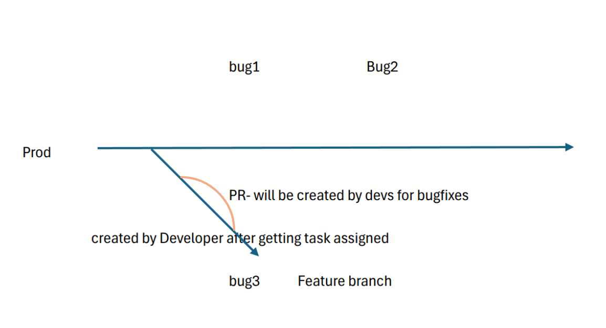

RTE Process: Managing Release Flow & Coordination
The Release Train Engineer (RTE) plays a crucial role in ensuring a smooth transition from development to deployment by managing bug fixes, feature releases, and coordinating regression testing before promoting releases to production.
Feature & Bug Management
Once QA signs off on testing, the RTE oversees the next steps for both feature releases (FR) and bug fixes:
- Feature Releases (FR):
All tasks exist in different branches, ensuring independent development and review.
All PRs remain in draft until they are ready for merging.
- Bug Fixes:
Bugs are planned sprint-wise, ensuring structured resolution.
Each bug ticket must include clear reproduction steps to avoid ambiguity.
The standard workflow follows L2 → RTE → Dev → RTE before proceeding further.
Unlike features, completed bug fixes are first reviewed by RTE, not QA, to ensure correctness and necessary documentation updates.
Developers must refine and confirm the reproduction steps, if necessary, before passing the fix to QA.
Regression Testing & Bug Loops
QA performs focused regression for each bug fix rather than a full regression, ensuring that specific issues are validated.
Why is full regression not happening? This needs discussion with QA to evaluate gaps.
Are bugs being deprioritized? If so, involving more development resources within the systems team may be required.
If new bugs are discovered during regression, new bug tickets are created, initiating another dev → QA → RC release cycle.
This process repeats until regression completes without issues.
RC Promotion & Production Deployment

Once all regression tests pass, the RTE promotes the RC (Release Candidate) to a production release (RC to Production Release Guide-Inprogress).
After release promotion, the ROPS team takes over production deployment.
With support from the FE team, ROPS ensures that the final software is successfully deployed to production environments.
{kind=link}